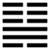

Địa Phong Thăng (升 shēng)
Nhóm họp lại thì tất nhiên chồng chất mãi lên, cho nên sau quẻ tụy đến quẻ Thăng (lên).
Thoán từ:
升: 元亨, 用見大人, 勿恤, 南征, 吉．
Thăng: nguyên hanh, dụng kiến đại nhân, vật tuất, nam chinh, cát.
Dịch: Lên: rất hanh thông, phải dùng người có tài đức (đại nhân), không có gì là lo ngại, cứ tiến về phía trước thì tốt.
Giảng: Tốn là gió mà cũng là cây. Ở đây hiểu là cây. Cây mọc ở dưới đất, mỗi ngày mỗi đâm lên cao, cho nên gọi là quẻ Thăng.
Cũng có thể hiểu: Khốn vôn là âm nhu mà tiến lên ngoại quái là vì thời tiến lên thì nên như vậy chứ bình thường thì dương mới thăng mà âm thì giáng. Tốn có tính nhún, khôn có tính thuận; lại thêm hào 5 âm có đức nhu và trung, ứng với hào 2 có đức dương cương, cho nên rất hanh thông. Phải dùng người có tài đức (hào 2) thì mới không có gì lo ngại. “Nam chinh” là tiến về phía trước mặt, chứ không có nghĩa là tiến về phía Nam.
Đại Tượng truyện khuyên xem quẻ này nên thuận đạo mà sửa đức, mỗi ngày một chút, lần lần sẽ rất cao (tích tiểu dĩ cao đại).
Ý nghĩa các hào :
1.
初六: 允升, 大吉
Sơ lục: Doãn thăng, đại cát.
Dịch: Hào 1, âm : có lòng tin mà tiến lên, rất tốt.
Giảng: Hào này âm nhu, ở dưới cùng, làm chủ nội quái Tốn, là có đức khiêm tốn, nhu thuận, theo sau hai hào dương (2 và 3) mà nhờ 2 hào đó dắt lên, rất tốt. “Doãn” nghĩa là tin, 1 tin 2 và 3, mà 2 và 3 cũng tin 1. Tiểu tượng truyện gọi như vậy là hợp chí nhau.
2.
九二: 孚, 乃利用禴, 无咎．
Cửu nhị: Phu, nãi lợi dụng thược, vô cữu.
Dịch: Hào 2, dương: tin nhau có lòng chí thành thì dùng lễ nhỏ cũng được, không có lỗi.
Giảng: Hào 2, này dương cương mà ở dưới, hào 5 âm nhu mà ở vị cao, hai bên khác nhau như vậy mà ứng với nhau là rất tin nhau bằng lòng chí thành, hợp tác với nhau làm nên sự nghiệp ở thời “Thăng”. Đã có lòng chí thành thì lễ vật rất đơn sơ cũng được, không có lỗi.
3.
九三: 升, 虛邑．
Cửu tam: Thăng, như ấp.
Dịch: Hào 3, dương: lên dễ dàng như vào cái ấp không người.
Giảng: Hào này đắc chính, có tài, ở trên cùng nội quái là Tốn, có đức thuận theo ba hào âm ở trên, được 3 hào dắt lên một một cách dễ dàng, như vào một cái ấp không có ai ngăn cản, không có gì ngại cả.
4.
六四: 王用亨于岐山, 吉, 无咎．
Lục tứ: Vương dụng hanh vu Kì sơn, cát, vô cữu.
Dịch: Hào 4, âm: vua Văn Vương dùng đạo mà hanh thịnh ở núi Kì sơn, tốt, không có lỗi.
Giảng: Hào này nhu thuận, đắc chính, ở ngay dưới hào 5, như vua một nước chư hầu, giúp thiên tử, dắt các người hiền cùng tiến lên; đó là trường hợp vua Văn Vương, một chư hầu dưới thời nhà Ân, lập nên sự nghiệp ở Kì Sơn.
5.
六五, 貞吉, 升階．
Lục ngũ: Trinh cát, thăng giai.
Dịch: Hào 5, âm: giữ được đạo chính thì tốt, dễ dàng lên thềm.
Giảng: Hào này tuy âm nhu nhưng đắc trung, ở dưới có hào 2 là hiền thần giúp, nên dễ dàng đắc chí, lên thềm cao một cách dễ dàng (lập được sự nghiệp)
6.
上六: 冥升, 利于不息之貞．
Thượng lục: Minh thăng, lợi vu vật tức chi trinh.
Dịch: Hào trên cùng, âm:Hôn ám cứ muốn lên hoài, nếu sửa đức cho hợp đạo chính, không bao giờ nghỉ thì có lợi.
Giảng: Hào này âm nhu, hôn ám, ở dưới thời “thăng”, đã lên đến cùng cực rồi mà còn muốn lên nữa; nếu đổi lòng ham lên đó thành lòng tự cường, sửa đức cho hợp đạo chính, không bao giờ nghỉ, thì lại tốt.
*
Năm hào dưới đều tốt, chỉ có hào trên cùng là xấu vì quá tham, cứ muốn tiến lên hoài về danh lợi, địa vị.